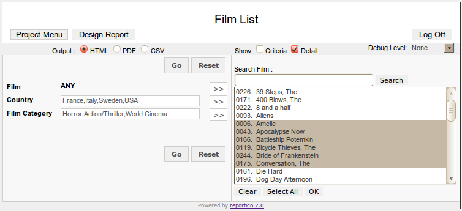

Report Preparation and Execution
Overview
Choosing a report and entering criteria is done in PREPARE mode. A report can be invoked by selecting it from the project menu or directly in the URL parameters (see Configuring Reportico - System Parameters ). In this mode you can select the required report criteria, select the required output format (HTML,PDF or CSV) and and then hit the Execute button. The report data should then be retrieved and presented correctly in the desired format

Top Level Buttons
At the top of the screen there are up to 3 buttons :- Project Menu allows you to return to the project report selection menu. If you are logged in as Administrator, then you will also see a Design Report button which allows you to design the report, and Log Off will log you out.
Criteria Entry
The criteria entry area in the centre left of the screen lists all the criteria that may be reported on. How entry is made depends on how the criteria items are configured. Users may type criteria values directly into a text box, select from list boxes or select from check boxes or radio butons.
For date and date range type criteria items, selection may be made from dropdown list boxes for day, month and year.
For text field items, you type your choices directly in. Multiple criteria items may be specified separated by commas.
Other crieteria entry may be done through checkbox or radio button selection.
Criteria Expansion
If a criteria item appears with an expand (>>) button alongside, then the item can be expanded in to a lookup pane on the right. Pressing this button causes the expansion pane on the right hand side to appear providing easier selection for that criteria item. Generally this will expand to provide a lookup list - generated from the database - of allowed values for that criteria item. As well as a list box, values may be presented as check boxes and radio buttons.
The list may be narrowed down by entering text into the search box and by pressing the Search button if configured.
The current selections for the criteria item can be cleared, or all items can be selected by using the Clear and Select All buttons respectively.
Pressing the Ok button closes the expansion pane. Your selected items will appear summarised in the criteria entry pane against the appropriate criteria item.
Reportico Date Formats
If your report contains a date type criteria, the format of dates on this screen appear in the "Display Date Format" specified in the Project configuration window. You can access this the project menu page if you are logged in as Administrator.
Report Output
Use the radio buttons to select which of HTML,PDF and CSV format you require
The Debug Level listbox appears only if debug has been turned on. Choosing a value of Low, Medium or High will present details of the queries and other events that occur during report execution, but will not present the report output itself. This is useful for troubleshooting reports.
Press the Go button to generate the report output.